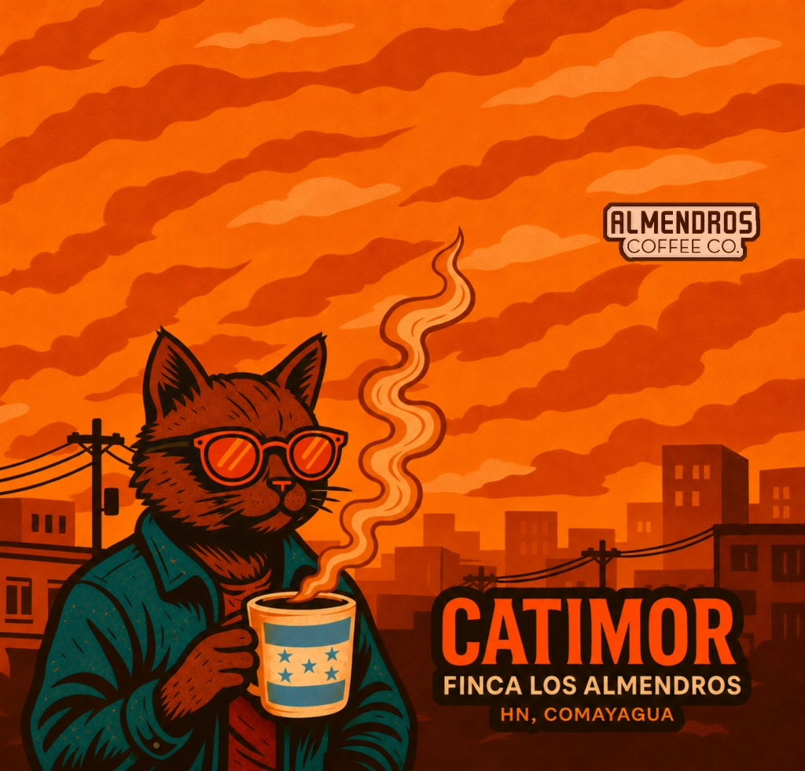
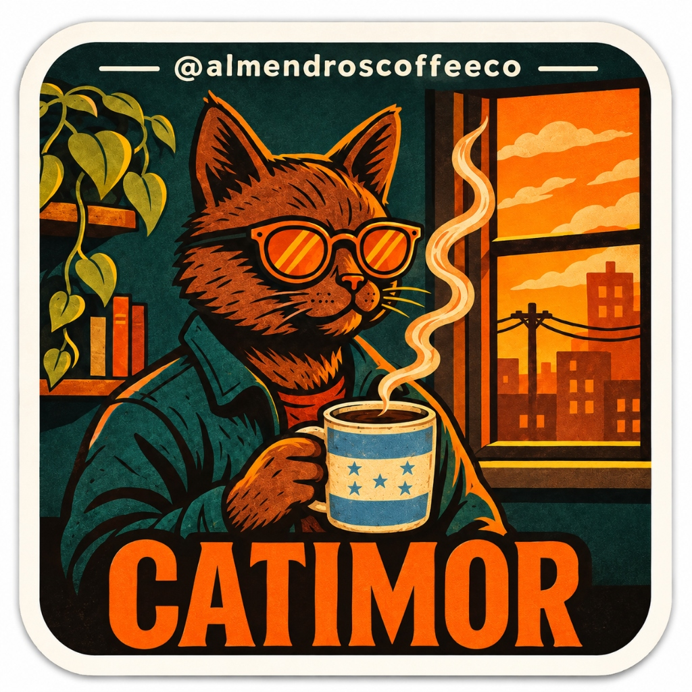

Catimor
Variedad única cultivada en Finca Los Almendros.
Fermentación anaeróbica · 120 horas
Tueste medio Café de especialidad hondureño

“La misma ciudad. Una selva de fruta en la taza.”
Origen único · Finca Los Almendros
Una sola variedad de Finca Los Almendros, con el carácter frutal de un café natural.
Variedad única cultivada en Finca Los Almendros.
Secado en cereza entera para conservar su carácter frutal.
Fermentación anaeróbica controlada de 120 horas.
Experiencia en taza
“Tiene la intensidad frutal de un café natural y el equilibrio de una fruta en su punto: el dulzor y la acidez se sienten juntos, y dan ganas de otro sorbo.”
Intensidad frutal propia de un proceso natural trabajado con paciencia.
Dulzor redondo que se siente desde el primer sorbo.
Equilibrio vivo que acompaña el dulzor y dan ganas de otro sorbo.
Origen real
La ciudad es el escenario de la historia ilustrada, pero el café nace en las montañas de San Luis, Comayagua. En Finca Los Almendros, bajo el cuidado de Fernando Padilla, este Catimor de cosecha 2026 crece entre 1,250 y 1,300 metros sobre el nivel del mar.
Variedad única cultivada en Finca Los Almendros.

De la ventana a la calle
Desde la ventana, el gato mira la ciudad de siempre mientras el cielo se tiñe de naranja y el sol empieza a caer. Se pone los lentes y sale al mismo camino de edificios y cables de todos los días. No pasa nada: afuera tampoco perdona su taza de Catimor, y un sorbo le basta para sentir una selva de fruta en medio de la ciudad.

Tras el vidrio, el cielo naranja anuncia que el sol empieza a caer. El gato observa los edificios y los cables de siempre antes de salir.
Con los lentes puestos, sale a recorrer las calles de todos los días. La rutina sigue igual, pero el ánimo cambia cuando lleva su café en mano.
Ya afuera, no se pierde su taza. Un sorbo de Catimor Natural le basta para transformar el paisaje urbano en una selva de fruta.
Café de especialidad hondureño
Elegí la presentación que mejor va con tu rutina. Ambas conservan el tueste medio y la fermentación anaeróbica de 120 horas de esta cosecha 2026.
L215
Consultar por 250 gL395
Consultar por 500 gLas condiciones y el costo del envío se consultan directamente por WhatsApp.